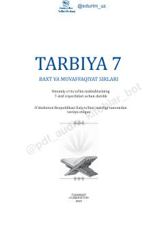

T77-sinf o'quvchilari uchun ma'naviy-axloqiy tarbiya darsligi.
Ushbu darslik 7-sinf o'quvchilari uchun mo'ljallangan bo'lib, unda insoniy fazilatlar, do'stlik, tabiatni asrash va vatanparvarlik kabi mavzular yoritilgan. Kitob o'quvchilarda yuksak ma'naviy-axloqiy sifatlarni shakllantirish va ularni ezgulikka yo'naltirishni maqsad qiladi.